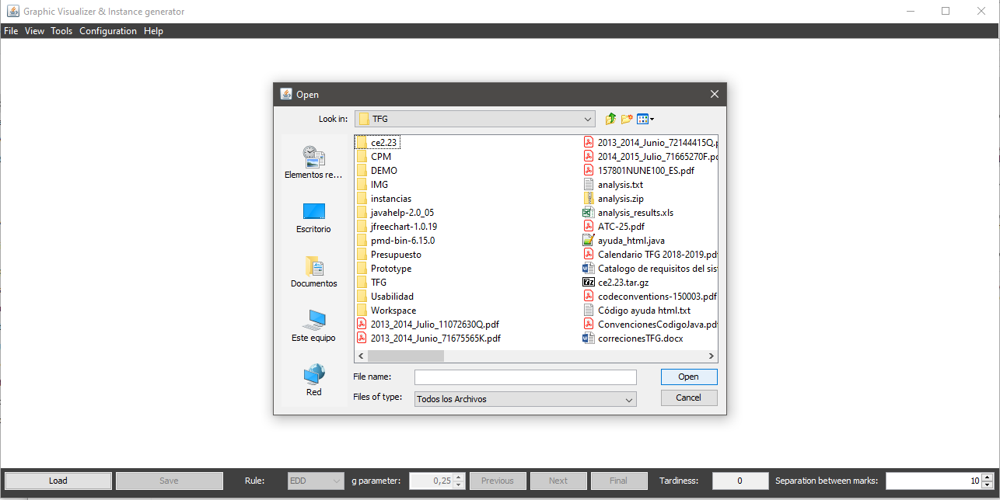
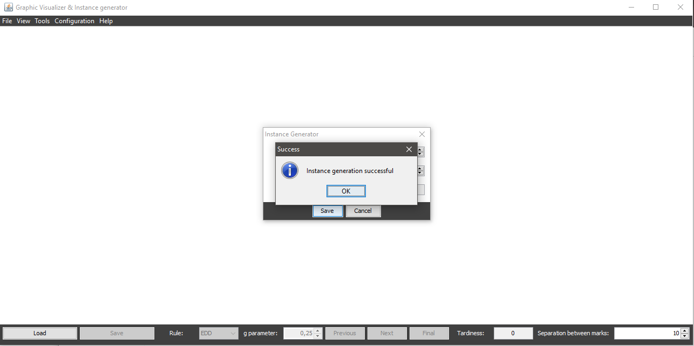

To access the instance generator there's no specific condition required and it can be done by one of these options:
Once you access the instance generator dialog, you can specify the parameters you want to create the instance:
By changing the value of this parameters, you can see how many capacity intervals are going to be created.
Once you access the option, a dialog will be displayed where you can navigate through your folders to choose the name of the file to save (it's not required to specify the extension, the system will automatically add the txt extension to the file). Generated file can be opened with any text editor or with the application itself.
Once the file is successfully generated, the system will inform the user:
